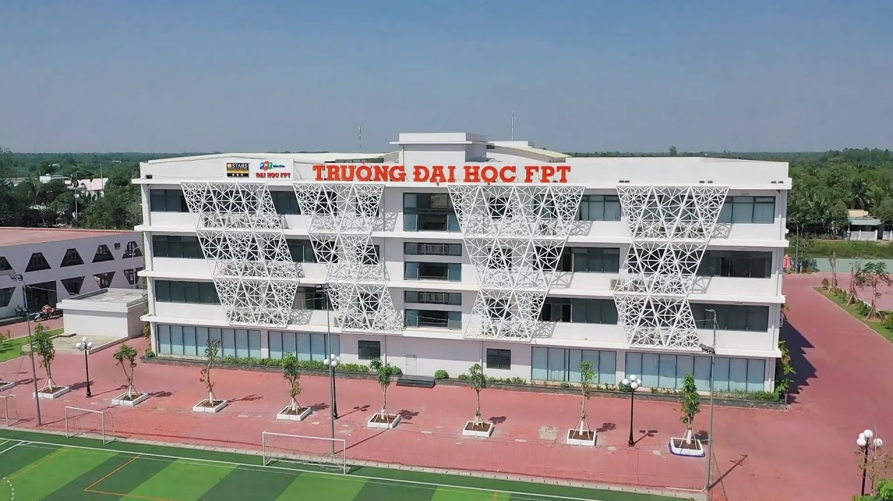

Welcome to FPT University
About FPT University
FPT University is one of the leading private universities in Vietnam, renowned for its high-quality education and innovation-driven curriculum. With a mission to nurture global citizens, FPT University provides excellent academic programs and a dynamic learning environment.
Campuses
Explore Our Locations
- Hòa Lạc Campus: Hòa Lạc Hi-Tech Park, km 29 Thang Long Boulevard: This campus, invested in and built by FPT, serves as the learning center for FPT High School, the International Student Development Division, and the Regular Undergraduate Program. Since September 15, 2015, it has been the main headquarters of FPT University.
- Da Nang Campus: Campus at 137 Nguyễn Thị Thập, Hòa Minh Ward, Liên Chiểu District, Da Nang City.
- Quy Nhon Campus: An Phu Thinh Urban Area, Nhơn Bình Ward, Quy Nhơn City, Binh Dinh Province.
- Ho Chi Minh City Campus: FPT University Building, High-Tech Park, Tân Phú Ward, Thủ Đức City, Ho Chi Minh City.
- Can Tho Campus: Rau Ram Bridge, Zone 6, Nguyễn Văn Cừ Extension, An Bình Ward, Ninh Kiều District, Can Tho City.
Gallery


Learn More
For more details about FPT University, visit our official website at daihoc.fpt.edu.vn.